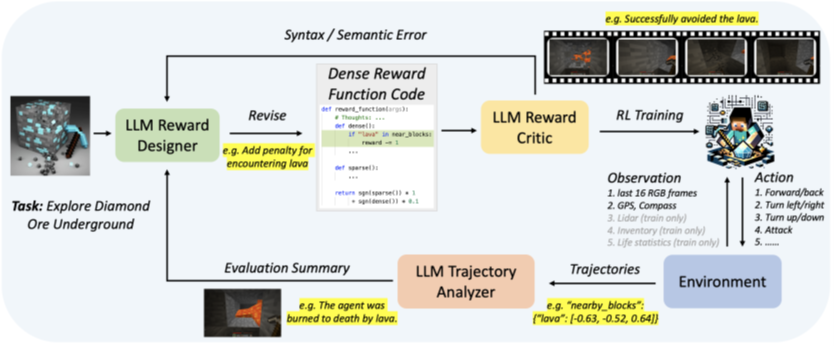
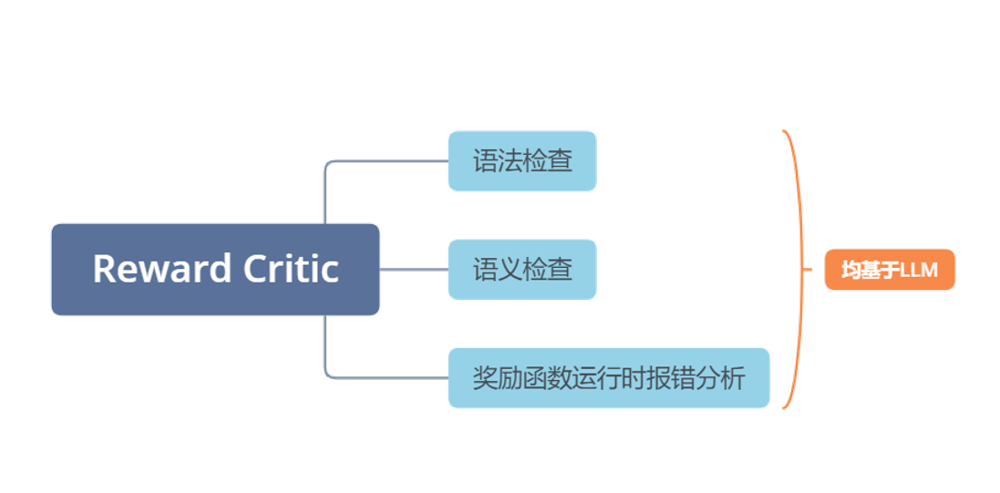
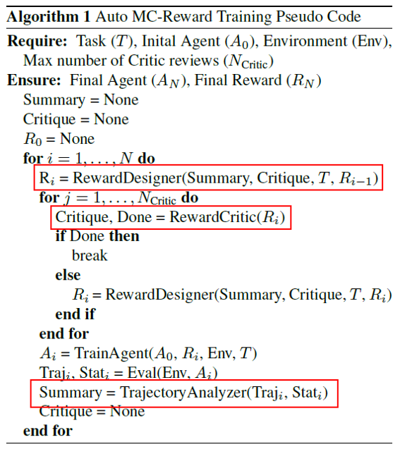
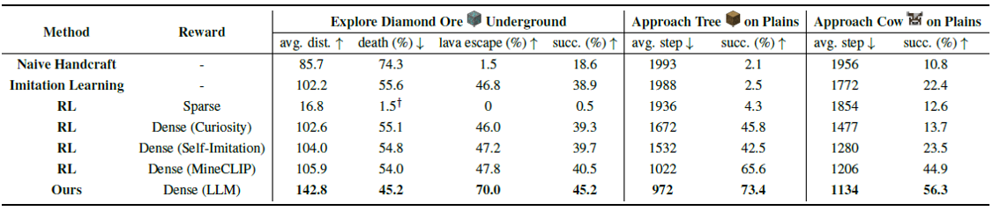
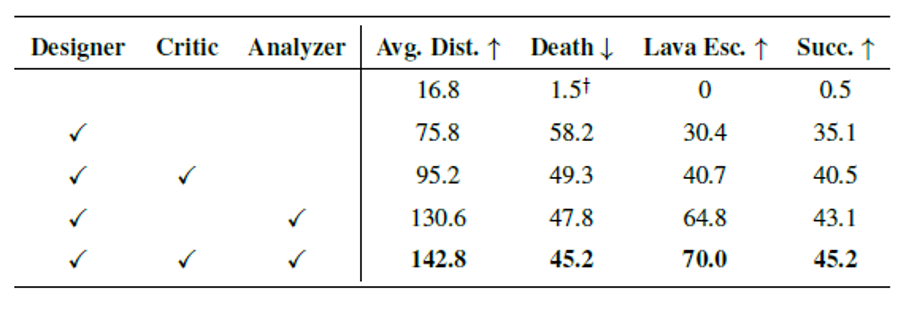

论文：Auto MC-Reward Automated Dense Reward Design with Large Language Models for Minecraft
作者：Hao Li, Xue Yang, Zhaokai Wang, Xizhou Zhu, Jie Zhou, Yu Qiao, Xiaogang Wang, Hongsheng Li, Lewei Lu, Jifeng Dai
发表：arKiv
传统的基于强化学习的代理主要依赖稀疏奖励，这种奖励通常只使用二进制值来表示任务的完成或失败。这种探索效率的挑战使得在Minecraft中有效学习复杂任务变得困难。为了解决这个问题，本文引入了一种先进的学习系统，名为Auto MC-Reward，它利用大型语言模型（LLMs）自动设计密集奖励函数，从而提高学习效率。Auto MC-Reward包括三个重要的组成部分：奖励设计器、奖励评判器和轨迹分析器。给定环境信息和任务描述，奖励设计器首先通过编写一个具有预定义观察输入的可执行Python函数来设计奖励函数。然后，奖励评判器将负责验证代码，检查代码是否自洽，是否没有语法和语义错误。此外，轨迹分析器总结可能的失败原因，并根据收集的轨迹提供改进建议。在下一轮中，奖励设计器将根据反馈进一步优化并迭代密集奖励函数。实验结果显示，本文的agent在Minecraft中的复杂任务中，如有效避开熔岩并获取钻石，以及在平原生物群落中有效探索稀疏的树木和动物，成功率和学习效率都有显著提高。
背景介绍
在缺乏大规模标签化的训练，且需要在不确定环境中进行任务探索时，强化学习一般来说是最优的选择，但传统的强化学习一般采用的稀疏奖励，即任务的反馈结果只有最终的成功或者失败，在任务中途不会给agent奖励信号，在面对复杂环境下的巨大决策空间时，这样的方法就显得效率低下
当然目前也存在一些解决办法，主要就是通过一些模仿学习来缩小决策空间，但这仍然无法避免agent和环境之间的大量交互
所以针对传统的强化学习所面临的挑战，本文提出了一套框架，用大语言模型来为强化学习自动化生成密集奖励函数，即该函数不仅包括最终的任务完成结果奖励反馈，还包括了在任务中途的奖励信号。
该框架包括三个模块：一是用于自动生成密集奖励函数的reward designer，二是用于检查奖励是否存在语法和语义错误的reward critic，最后一个模块trajectory analyzer，也是真正用到了LLM的总结和推理能力的模块，它主要根据任务失败的轨迹数据，分析失败原因，然后给reward designer反馈奖励函数的修改建议
所以整个框架的工作流程就是：reward designer生成奖励函数，reward critic审查奖励函数，审查通过的奖励函数用于强化学习训练，最后trajectory analyzer分析失败的轨迹数据，将修改建议反馈给reward designer，之后reward designer再迭代生成更优的奖励函数

相关工作
强化学习优化：
Hierarchical RL、curriculum learning、imitation learning
密集奖励函数：
Curiosity-driven exploration、self-imitation learning、goal-conditioned RL
RL中引入LLM
在本文之前也有人在RL中引入LLM，不过他们要么是将LLM作为一个高层的计划者来分解复杂任务，而并非像本文这样用LLM来生成奖励函数
方法介绍
模块一、Reward Designer
模块一reward designer，这个模块的功能就是利用LLM，根据具体的任务要求，游戏信息以及奖励函数相关的格式要求来直接生成可执行的python代码，
这个模块有三个特点：
一是在设计奖励函数考虑多步存储机制，因为一般而言，对于长线任务，agent需要在多个step之间传递信息
二是思维链机制，这个就是说让LLM在具体设计函数之前先讲讲它的设计思路，然后必要时在具体的代码上方加上注释细节
三是范围限制，reward designer会设计密集和稀疏两个奖励函数，对这两个函数的奖励返回值，都只考虑其符号，然后用下面这个公式来算最终的奖励数值，这是为了让奖励值维持在一个合理的范围，同时让LLM专注于各种场景，而不是调整奖励数值上
模块二、Reward Critic
reward critic就比较简单了，它主要是利用LLM来做三方面的工作，分别是对生成的奖励函数做语法和语义检查，然后对奖励函数运行是的可能报错做分析

模块三、Trajectory Analyzer
第三个模块trajectory analyzer，这个模块算是真正意义上利用了LLM的总结和推理能力，因为尽管增加密集奖励函数，但和传统的强化学习一样，其也没有总结和推理的能力，而轨迹分析模块通过对失败任务轨迹进行分析，由LLM自动推断失败原因，然后将奖励函数的修改意见反馈给reward designer
以下图中的step2为例，当agent在岩浆附近死亡，则轨迹分析模块会将在遇到岩浆时增加处罚这一反馈信号传递给reward designer

实验介绍
Auto MC-Reward框架训练
LLM prompt:
1.流程指令：主要包括几个模块的控制命令
2.任务描述
3.游戏信息
4.失败轨迹的统计信息：trajectory analyzer模块需要的信息
5.输入参数：主要包括agent在任务过程中的环境参数和状态信息
6.奖励函数的格式和要求
整个训练流程的伪代码：

任务设计和基准模型
四类任务（基于Minecraft的仿真平台MineDojo）：
1.在地下11层水平寻找钻石
2.靠近森林
3.靠近特定动物群体
4.获取钻石
六个基准模型：
1.Naive Handcraft
2.Imitation Learning(GITM)
3.RL with Sparse Reward
4.RL with Curiosity Dense Reward
5.RL with Self-Imitation Dense Reward
6.RL with MineCLIP Dense Reward
实验结果
基准模型和本文方法在三类任务下的结果对比：平均步数、死亡率、成功率

结果说明：
实验结果就是本文的结果比这几个基准模型的结果都要好，主要参考任务完成的平均步数、死亡率和任务成功率
这里唯一需要说明的一下就是使用稀疏奖励的强化学习在探索钻石任务中死亡率非常低的问题，这是因为采用了稀疏奖励的强化学习只探索了很少的空间，所以很少遇到岩浆
消融实验结果

总结
• 传统强化学习依赖稀疏奖励函数，决策空间大，效率低
• 本文利用LLM的总结和推理能力，自动迭代生成密集奖励函数，提高了强化学习的效率
✉️ zjuvis@cad.zju.edu.cn